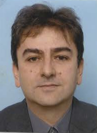

Associate Professor (ORCID)
Indiana University (IU)
phone: +1 812 856-5094 (or via Skype, Google Hangouts, Zoom)
email: dcavar at the domain where we all are, here at IU (iu.edu)
departmental address: Indiana University, Department of Linguistics, Ballantine Hall, Room 814, 1020 E. Kirkwood Ave., Bloomington, IN 47405, USA.
Most recent:

Research Projects:
Adjunct/Member:
Code, Data, and Projects:
Course in Fall 2018
Course in Spring 2018
Colloquium meetings in 2018: (contact me, if you would like to participate)
Courses in Fall 2017: